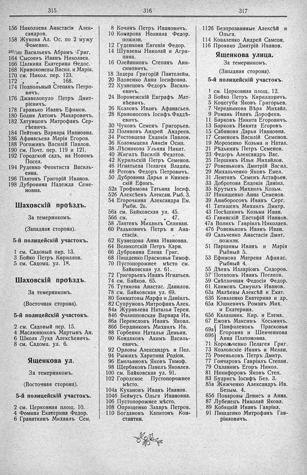

Лист источника 237
Скан

Распознанный текст
315
156 Николаева Анастасія Алек-
сандров.
158 Жукова Ал. Ос. по 2 мужу
Фоменко.
160/162 Васильевъ Абрамъ Григ.
164 Сысоевъ Иванъ Николаев.
166 Цалкина Екатерина Ѳедос.
168 Кривоконевы Васил. и Марія.
170 см. Никол. пер. 123.
172 „ „ „ 168.
174 Подпольный Степанъ Петро-
вичъ.
176 Джавелопуло Петръ Дмит-
ріевичъ.
178 Гаранько Иванъ Ефимов.
180 Бодня Антонъ Макаровичъ.
182 Хатунцовъ Митрофанъ Сер-
гѣевичъ.
184 Пейтонъ Варвара Ивановна.
186 Афанасьева Марія Егоров.
188 Рогожинъ Василій Павлов.
190 см. Почт. пер. 119 и 121.
192 Городской садъ, на Новомъ
Посел.
194 Руденко Феоктиста Василь-
евна.
196 Платонъ Григорій Иванов.
198 Дубровина Надежда Семе-
новна.
Шаховскій проѣздъ.
За темерникомъ.
(Западная сторона).
5-й полицейскій участокъ.
1 см. Садовый пер. 13.
3 Бойко Петръ Кириллов.
5 см. Садомц. ул. 18.
Шаховскій проѣздъ.
За темерникомъ.
(Восточная сторона).
5-й полицейскій участокъ.
2 см. Садовый пер. 15.
4 Маслюнюковъ Мартынъ Ан.
6 Школа Лука Алексѣевичъ.
8 см. Садомц. ул. 6.
Ященкова ул.
За темерникомъ.
(Восточная сторона).
5-й полицейскій участокъ.
2 см. Церковная площ. 10.
4 Фомина Екатерина Федор.
6 Гранаткинъ Михаилъ Сем.
316
8 Кочинъ Петръ Ивановичъ.
10 Комарова Неонила Федор.
пожизн.
12 Гуденкова Евгенія Федор.
14 Шуваевы Николай и Агри-
пина.
16 Олейниковъ Степанъ Ани-
симовичъ.
18 Задера Григорій Пантелейм.
20 Вдовенко Анна Іосифовна.
22 Кузнецовъ Федоръ Василь-
евичъ.
24 Воронежскій Евграфъ Мат-
вѣевичъ.
26 Козловъ Иванъ Афанасьев.
28 Кривоносовъ Іосифъ Фаддѣ-
евичъ.
30 Чуковъ Семенъ Григорьев.
32 Поляковъ Андрей Андреев.
34 Ростовцева Евдокія Павлов.
36 Коломыцева Анисія Осип.
38 Лѣсникова Ульяна Никит.
40 Жигилъ Василій Федотов.
42 Курильскій Петръ Семенов.
46 Игнатьева Пелагея Владим.
48 Ротовъ Федоръ Петровичъ.
50 Дубровина Дарья и Князев-
скій Ефимъ.
52а Трофимова Татьяна Іосиф.
52б Алексѣевъ Алексан. Рыб. 3.
54 Егорочкина Александра Ем.
Рыбн. 2б.
56а см. Байковская ул. 45.
56б см. „ „ 47.
58 Лаптевъ Михаилъ Селиван.
60 Радьковичъ Петръ и Ана-
стасія.
62 Кузнецова Анна Ивановна.
64 Великотскій Петръ Карн.
66 Дубровина Елена Григ.
68 Пишденко Прасковья Тимоф.
70 Пустопорожнее мѣсто см.
Байковская ул. 61.
72 Григорьевъ Иванъ Игнатьев.
74 см. Байков. 65.
76 Тутикова Анастас. Данилов.
78 см. Байковская ул. 69.
80 Бакматовы Марфа и Даніилъ.
82 Супруновъ Митрофанъ Алек.
84а Журавлева Наталья Терен.
84б Филипповская Варвара Ив.
86а Переясловъ Иванъ Яковл.
86б Бердниковъ Михаилъ Ив.
88 Горбенко Наталья Демьян.
90 Кондаковъ Акимъ Василь-
евичъ.
92 Орловы Александръ и Пел.
94 Рыжихъ Харитина Родіон.
96 Емельяновъ Яковъ Тимоф.
98 Щербаковъ Павелъ Яковлев.
100 см. Байковская ул. 91.
102 Городское Пустопорожнее
мѣсто.
104а Кукановъ Иванъ Иванов.
104б Беймусъ Ольга Ивановна.
106 Пустопорожнее мѣсто.
108 Оприщенко Захаръ Петров.
110 Богдановъ Капитонъ Кон-
стантин.
317
112б Безпрозванные Алексѣй и
Ольга.
114 Коваленко Андрей Самсон.
116 Проявко Дмитрій Иванов.
Ященкова улица.
За темерникомъ.
(Западная сторона).
5-й полицейскій участокъ.
1 см. Церковная площ. 12.
3 Бойко Петръ Кирилловичъ.
5 Коцегуба Яковъ Григорьев.
7 Чередникова Вѣра Михайл.
9 Романъ Иванъ Дорофеев.
11 Барковъ Никита Егоровичъ.
13 Барковъ Никита Егоровъ
15 Сабинова Дарья Ивановна.
17 Семеновъ Василій Семенов.
19 Морозенко Козьма и Натал.
21 Рѣдькинъ Петръ Семенов.
23 Федоръ Александръ Вас.
25 Першинъ Илья Михайлов.
27 Ровеньковъ Дмитрій Васил.
29 Михальченко Яковъ Емел.
31 Лентинъ Семенъ Астафьев.
33 Добротова Евдокія Даніил.
35 Крутыхъ Михаилъ Козьм.
37 Никищенко Анна Семенов.
39 Аниборосовъ Иванъ Серг.
41 Татищевъ Михаилъ Дмитр.
43 Посѣшкинъ Козьма Иван.
45 Гавинскій Евстафій Иванов.
47а Воликъ Гавріилъ Николаев.
47б Ровеньковъ Иванъ Иван.
49 Сальченко Анастасія Дмит.
пожизн.
51 Паршины Иванъ и Марія
Рыбный 5.
53 Ефимова Матрена Афанас.
Рыбный 4.
55 Дѣевъ Илларіонъ Сидоров.
57 Потаповъ Иванъ Потапов.
59 Свѣтличная Федосія Федор.
61 Климовъ Самуилъ Иванов.
63а Малѣевы Алексѣй и Екат.
63б Коваленко Екатерина и др.
65а Юшкевичъ Романъ Мих.
и Екатерина.
65б Калашник. Кир. и Елена.
67 Ежовъ Максимъ Косьмичъ.
69а) Панфиленокъ Прасковья
69б) Егоровна и Шевченкова
Анна Платоновна.
71 Корольченко Пелагея Григ.
73 Козловскіе Иванъ и Мелан.
75 Ровеньковъ Петръ Дмитр.
77 Гончаровъ Гавріилъ Степан.
79 Охланинъ Егоръ Никол.
81 Никифоровъ Яковъ Степ.
83 Будрисъ Іосифъ Без. 3.
85а Жижченко Александръ Ив.
Безым. 4.
85б Поваровы Денисъ и Анна.
87 Лубенецъ Николай Яковл.
89 Кобяцкій Иванъ Гавріил.
91 Пишденко Митрофанъ Гав-
ріиловичъ.